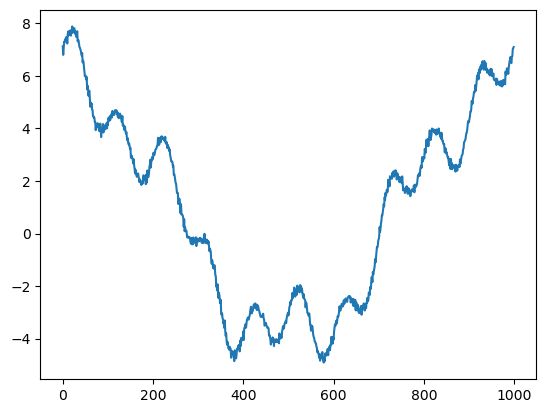
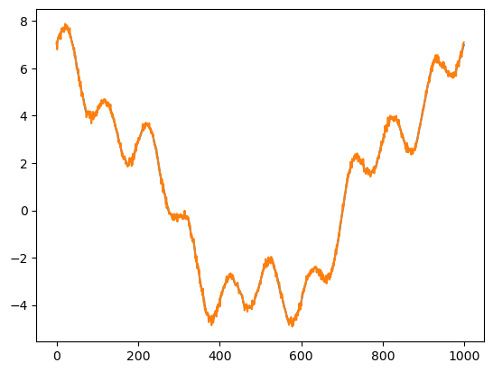

Discrete Fourier Transform#
import numpy as np
from matplotlib import pyplot as plt
def fourier(y, number_of_harmonics):
x = np.matrix(np.arange(0,np.size(y)))/np.size(y)*2*3.14159
#
#print(x)
n = np.matrix(np.arange(0,number_of_harmonics))
omega = x.T.dot(n)
cos_coef = np.matrix(y).dot(np.cos(omega))
sin_coef = np.matrix(y).dot(np.sin(omega))
cos_coef = cos_coef/np.size(y)*2
sin_coef = sin_coef/np.size(y)*2
cos_coef[0,0] = cos_coef[0,0]/2
reconstruct = cos_coef.dot(np.cos(omega).T)+sin_coef.dot(np.sin(omega).T)
return cos_coef,sin_coef, reconstruct, omega
x = np.linspace(0,2*3.14159,1000)
y = 1*np.cos(0*x)+5*np.cos(x)+np.cos(4*x)+np.sin(10*x)+np.random.normal(0,0.1,1000)
plt.plot(y)
wave_number = 100
cos_coef,sin_coef,reconstruct, omega = fourier(y,wave_number)
plt.figure()
plt.contourf(np.cos(omega))
# plt.scatter(np.arange(0,wave_number),np.array(cos_coef),s=40)
# plt.scatter(np.arange(0,wave_number),np.array(sin_coef),s=40)
plt.figure()
plt.plot(reconstruct[0,:].T)
plt.plot(y)
print('cos coef=',cos_coef)
print('sin coef=',sin_coef)
plt.figure()
plt.plot(cos_coef)
cos coef= [[ 1.00784671e+00 5.00531313e+00 -2.20673790e-03 -3.90828396e-03
1.00195750e+00 -2.40518394e-03 -1.20834481e-03 -1.22076056e-02
-2.04699217e-03 -5.54099397e-04 3.46807426e-02 -3.88787967e-03
5.39497616e-04 -3.33433121e-03 3.07431108e-03 6.67771653e-03
-2.86173529e-03 1.94329456e-06 -2.58723053e-03 5.74731494e-03
2.99557845e-03 -1.23120690e-03 3.46436258e-04 -9.44543547e-04
-2.29342079e-03 8.81460439e-03 6.79327715e-03 3.41996674e-03
4.77525819e-03 3.43299858e-03 9.40116251e-04 9.73476407e-03
-1.21880803e-02 -7.57613708e-03 2.84054578e-04 -3.93264607e-03
2.78196737e-03 3.95313318e-04 9.44810236e-03 -3.75990949e-03
-1.94017708e-03 -5.37620259e-04 -1.65854155e-03 -2.98586892e-03
3.13500146e-03 5.47477334e-03 -2.53358954e-03 2.38835114e-03
-7.35205107e-03 5.11418985e-03 -4.95588857e-03 3.87480295e-03
-9.36766083e-03 3.29540617e-03 -4.48308428e-05 -3.89277595e-03
4.06373312e-03 3.98610495e-03 -1.12138807e-02 3.39811565e-03
1.40752682e-03 5.46780358e-03 1.96917201e-03 3.85951028e-03
-2.66090983e-03 -8.18303448e-05 3.63929964e-03 -7.96753002e-04
3.36545588e-03 -3.67595146e-03 -9.10399189e-03 -4.32279579e-03
9.85730807e-03 -9.48714647e-04 -6.95954373e-03 7.99746224e-04
1.14089201e-03 1.15862818e-02 1.71173594e-03 -3.15293468e-03
1.78214109e-03 -2.55282518e-03 -9.10953585e-03 2.24380426e-03
1.60825561e-03 -5.78908361e-03 3.73400857e-03 -4.18279932e-03
9.36367259e-04 9.08876075e-03 3.48113359e-04 -9.25547322e-03
2.98321108e-03 -1.07401449e-03 -3.78085938e-04 1.01279291e-03
3.14273197e-03 -6.46320437e-03 1.27814195e-03 1.43003818e-03]]
sin coef= [[ 0.00000000e+00 -2.12998386e-02 6.98769559e-03 -8.18206416e-03
-1.33525075e-02 -7.89950402e-03 -2.06059251e-03 2.79710088e-03
5.41033371e-03 9.55572530e-03 9.94257091e-01 -1.01899176e-02
-8.61059375e-03 1.69741244e-04 -3.07656205e-03 -7.26320192e-03
-6.65570163e-03 -7.02955203e-03 2.86294269e-04 -4.28516328e-03
-6.45397282e-04 -2.38604889e-03 5.28468937e-05 1.67987165e-03
-3.95034961e-03 -1.08571634e-03 -1.26142611e-03 -3.95016965e-03
-4.17550069e-03 -1.45968972e-03 -7.88456099e-03 -8.25487975e-03
-8.88862430e-03 -1.00440142e-02 -2.24464930e-03 5.51422482e-03
6.07710671e-03 -2.63164108e-03 1.43681137e-02 -6.95439022e-03
-5.86332890e-05 4.70168027e-03 5.52497237e-03 1.93771359e-03
-5.34141966e-03 -4.18469013e-03 -4.61799503e-03 5.92686484e-03
7.57134351e-04 -1.85712124e-03 3.35140577e-03 6.46413833e-03
5.28584764e-03 2.79343018e-03 9.46916175e-03 1.32509955e-03
1.95137492e-03 1.13635463e-03 1.90346106e-04 -7.22021490e-04
-3.41377388e-04 -5.92115558e-03 5.58360622e-03 -1.46219046e-03
-8.91240429e-03 -5.90887429e-04 -2.42225970e-03 1.19289595e-03
-1.91295158e-03 -5.54176470e-03 -5.96689509e-04 6.93907004e-04
1.16921505e-03 3.31553767e-03 -5.74399935e-03 1.53093605e-03
-3.36299062e-03 -4.81260692e-03 6.27097472e-03 6.05670898e-03
1.24058568e-03 -4.34730790e-03 -3.10409993e-04 -3.82786659e-03
2.55444905e-03 -8.71050690e-03 -3.52893896e-03 4.32543180e-03
-9.04142264e-04 -5.54667416e-03 8.33368420e-04 3.35388965e-03
-2.60423593e-03 1.00672815e-02 -6.55664637e-03 6.24948796e-03
3.94906352e-03 2.67999734e-03 4.65288705e-03 -3.88104443e-03]]
[<matplotlib.lines.Line2D at 0x117b0d8b0>,
<matplotlib.lines.Line2D at 0x117b0d9d0>,
<matplotlib.lines.Line2D at 0x117b0daf0>,
<matplotlib.lines.Line2D at 0x117b0dc10>,
<matplotlib.lines.Line2D at 0x117b0dd30>,
<matplotlib.lines.Line2D at 0x117b0de50>,
<matplotlib.lines.Line2D at 0x117b0df70>,
<matplotlib.lines.Line2D at 0x117b0d850>,
<matplotlib.lines.Line2D at 0x117b191f0>,
<matplotlib.lines.Line2D at 0x117b19310>,
<matplotlib.lines.Line2D at 0x117b19430>,
<matplotlib.lines.Line2D at 0x117b19550>,
<matplotlib.lines.Line2D at 0x117b19670>,
<matplotlib.lines.Line2D at 0x117b19790>,
<matplotlib.lines.Line2D at 0x117b198b0>,
<matplotlib.lines.Line2D at 0x117b199d0>,
<matplotlib.lines.Line2D at 0x117b19af0>,
<matplotlib.lines.Line2D at 0x117b19c10>,
<matplotlib.lines.Line2D at 0x117b19d30>,
<matplotlib.lines.Line2D at 0x117b19e50>,
<matplotlib.lines.Line2D at 0x117b19f70>,
<matplotlib.lines.Line2D at 0x117b190d0>,
<matplotlib.lines.Line2D at 0x117b221f0>,
<matplotlib.lines.Line2D at 0x117b22310>,
<matplotlib.lines.Line2D at 0x117b22430>,
<matplotlib.lines.Line2D at 0x117b22550>,
<matplotlib.lines.Line2D at 0x117b22670>,
<matplotlib.lines.Line2D at 0x117b22790>,
<matplotlib.lines.Line2D at 0x117b228b0>,
<matplotlib.lines.Line2D at 0x117b229d0>,
<matplotlib.lines.Line2D at 0x117b22af0>,
<matplotlib.lines.Line2D at 0x117b22c10>,
<matplotlib.lines.Line2D at 0x117b22d30>,
<matplotlib.lines.Line2D at 0x117b22e50>,
<matplotlib.lines.Line2D at 0x117b22f70>,
<matplotlib.lines.Line2D at 0x117b220d0>,
<matplotlib.lines.Line2D at 0x1179a61f0>,
<matplotlib.lines.Line2D at 0x1179a6310>,
<matplotlib.lines.Line2D at 0x1179a6430>,
<matplotlib.lines.Line2D at 0x1179a6550>,
<matplotlib.lines.Line2D at 0x1179a6670>,
<matplotlib.lines.Line2D at 0x1179a6790>,
<matplotlib.lines.Line2D at 0x1179a68b0>,
<matplotlib.lines.Line2D at 0x1179a69d0>,
<matplotlib.lines.Line2D at 0x1179a6af0>,
<matplotlib.lines.Line2D at 0x1179a6c10>,
<matplotlib.lines.Line2D at 0x1179a6d30>,
<matplotlib.lines.Line2D at 0x1179a6e50>,
<matplotlib.lines.Line2D at 0x1179a6f70>,
<matplotlib.lines.Line2D at 0x1179a60d0>,
<matplotlib.lines.Line2D at 0x1179ae1f0>,
<matplotlib.lines.Line2D at 0x1179ae310>,
<matplotlib.lines.Line2D at 0x1179ae430>,
<matplotlib.lines.Line2D at 0x1179ae550>,
<matplotlib.lines.Line2D at 0x1179ae670>,
<matplotlib.lines.Line2D at 0x1179ae790>,
<matplotlib.lines.Line2D at 0x1179ae8b0>,
<matplotlib.lines.Line2D at 0x1179ae9d0>,
<matplotlib.lines.Line2D at 0x1179aeaf0>,
<matplotlib.lines.Line2D at 0x1179aec10>,
<matplotlib.lines.Line2D at 0x1179aed30>,
<matplotlib.lines.Line2D at 0x1179aee50>,
<matplotlib.lines.Line2D at 0x1179aef70>,
<matplotlib.lines.Line2D at 0x1179ae0d0>,
<matplotlib.lines.Line2D at 0x1179b61f0>,
<matplotlib.lines.Line2D at 0x1179b6310>,
<matplotlib.lines.Line2D at 0x1179b6430>,
<matplotlib.lines.Line2D at 0x1179b6550>,
<matplotlib.lines.Line2D at 0x1179b6670>,
<matplotlib.lines.Line2D at 0x1179b6790>,
<matplotlib.lines.Line2D at 0x1179b68b0>,
<matplotlib.lines.Line2D at 0x1179b69d0>,
<matplotlib.lines.Line2D at 0x1179b6af0>,
<matplotlib.lines.Line2D at 0x1179b6c10>,
<matplotlib.lines.Line2D at 0x1179b6d30>,
<matplotlib.lines.Line2D at 0x1179b6e50>,
<matplotlib.lines.Line2D at 0x1179b6f70>,
<matplotlib.lines.Line2D at 0x1179b60d0>,
<matplotlib.lines.Line2D at 0x117b3d910>,
<matplotlib.lines.Line2D at 0x1179bd1f0>,
<matplotlib.lines.Line2D at 0x1179bd310>,
<matplotlib.lines.Line2D at 0x1179bd430>,
<matplotlib.lines.Line2D at 0x1179bd550>,
<matplotlib.lines.Line2D at 0x1179bd670>,
<matplotlib.lines.Line2D at 0x1179bd790>,
<matplotlib.lines.Line2D at 0x1179bd880>,
<matplotlib.lines.Line2D at 0x1179bd9a0>,
<matplotlib.lines.Line2D at 0x1179bdac0>,
<matplotlib.lines.Line2D at 0x1179bdbe0>,
<matplotlib.lines.Line2D at 0x1179bdd00>,
<matplotlib.lines.Line2D at 0x1179bde20>,
<matplotlib.lines.Line2D at 0x1179bdf40>,
<matplotlib.lines.Line2D at 0x1179bd0d0>,
<matplotlib.lines.Line2D at 0x1179c41c0>,
<matplotlib.lines.Line2D at 0x1179c42e0>,
<matplotlib.lines.Line2D at 0x1179c4400>,
<matplotlib.lines.Line2D at 0x1179c4520>,
<matplotlib.lines.Line2D at 0x1179c4640>,
<matplotlib.lines.Line2D at 0x1179c4760>,
<matplotlib.lines.Line2D at 0x1179c4880>]




def dft(y):
y = np.asarray(y, dtype=float)
N = y.shape[0]
n = np.arange(N)
k = n.reshape((N, 1))
M = np.exp(-2j * np.pi * k * n / N)
return np.dot(M, y)/np.size(y)
plt.plot(dft(y))
y_hat = np.matrix(dft(y))
print(y_hat.dot((y_hat.conjugate()).T))
print(np.var(y))
[[14.55046782+0.j]]
13.534712830736774
/Users/Shared/miniconda3/envs/jupyterbook/lib/python3.9/site-packages/matplotlib/cbook.py:1762: ComplexWarning: Casting complex values to real discards the imaginary part
return math.isfinite(val)
/Users/Shared/miniconda3/envs/jupyterbook/lib/python3.9/site-packages/matplotlib/cbook.py:1398: ComplexWarning: Casting complex values to real discards the imaginary part
return np.asarray(x, float)
Gibbs phenomenon#
y = np.cos(0*x)+5*np.cos(x)+np.cos(4*x)+np.sin(10*x)
plt.plot(dft(y)[0:10],'k')
# maskout the data by half
y[0:500] = 0
plt.plot(dft(y)[0:10]*2)
[<matplotlib.lines.Line2D at 0x1260539a0>]

Fast Fourier Transform#
import numpy as np
def fft(x):
N = len(x)
if N <= 1:
return x
even = fft(x[0::2])
odd = fft(x[1::2])
T = [np.exp(-2j * np.pi * k / N) * odd[k] for k in range(N // 2)]
return [even[k] + T[k] for k in range(N // 2)] + \
[even[k] - T[k] for k in range(N // 2)]
def fft_recursive(x):
N = len(x)
if N % 2 > 0:
raise ValueError("Length of input must be a power of 2")
elif N <= 32:
return fft(x)
else:
even = fft_recursive(x[0::2])
odd = fft_recursive(x[1::2])
T = [np.exp(-2j * np.pi * k / N) * odd[k] for k in range(N // 2)]
return [even[k] + T[k] for k in range(N // 2)] + \
[even[k] - T[k] for k in range(N // 2)]
def main():
x = np.random.random(1024)
#print("Input sequence:", x)
y = fft_recursive(x)
#print("FFT result:", y)
if __name__ == "__main__":
main()
def FFT(x):
"""
A recursive implementation of
the 1D Cooley-Tukey FFT, the
input should have a length of
power of 2.
"""
N = len(x)
if N == 1:
return x
else:
X_even = FFT(x[::2])
X_odd = FFT(x[1::2])
factor = np.exp(-2j*np.pi*np.arange(N)/ N)
X = np.concatenate(\
[X_even+factor[:int(N/2)]*X_odd,
X_even+factor[int(N/2):]*X_odd])
return X
# sampling rate
sr = 128
# sampling interval
ts = 1.0/sr
t = np.arange(0,1,ts)
freq = 1.
x = 3*np.sin(2*np.pi*freq*t)
freq = 4
x += np.sin(2*np.pi*freq*t)
freq = 7
x += 0.5* np.sin(2*np.pi*freq*t)
plt.figure(figsize = (8, 6))
plt.plot(t, x, 'r')
plt.ylabel('Amplitude')
plt.show()

%timeit X=FFT(x)
%timeit dft(x)
# calculate the frequency
N = len(X)
n = np.arange(N)
T = N/sr
freq = n/T
plt.figure(figsize = (12, 6))
plt.subplot(121)
plt.stem(freq, abs(X), 'b', \
markerfmt=" ", basefmt="-b")
plt.xlabel('Freq (Hz)')
plt.ylabel('FFT Amplitude |X(freq)|')
# Get the one-sided specturm
n_oneside = N//2
# get the one side frequency
f_oneside = freq[:n_oneside]
# normalize the amplitude
X_oneside =X[:n_oneside]/n_oneside
plt.subplot(122)
plt.stem(f_oneside, abs(X_oneside), 'b', \
markerfmt=" ", basefmt="-b")
plt.xlabel('Freq (Hz)')
plt.ylabel('Normalized FFT Amplitude |X(freq)|')
plt.tight_layout()
plt.show()
597 µs ± 3.18 µs per loop (mean ± std. dev. of 7 runs, 1,000 loops each)
365 µs ± 1.38 µs per loop (mean ± std. dev. of 7 runs, 1,000 loops each)
---------------------------------------------------------------------------
NameError Traceback (most recent call last)
Cell In[7], line 4
2 get_ipython().run_line_magic('timeit', 'dft(x)')
3 # calculate the frequency
----> 4 N = len(X)
5 n = np.arange(N)
6 T = N/sr
NameError: name 'X' is not defined
import numpy as np
def fft(x):
N = len(x)
if N <= 1:
return x
even = fft(x[::2])
odd = fft(x[1::2])
T = [np.exp(-2j * np.pi * k / N) * odd[k] for k in range(N // 2)]
return [even[k] + T[k] for k in range(N // 2)] + \
[even[k] - T[k] for k in range(N // 2)]
import numpy as np
import matplotlib.pyplot as plt
# Generate a sinusoidal signal with noise
t = np.linspace(0, 1, 1000)
f_signal = 5 # Frequency of the signal
signal = np.sin(2 * np.pi * f_signal * t) + 0.5 * np.random.randn(1000) # Adding noise
# Compute FFT
fft_result = np.fft.fft(signal)
frequencies = np.fft.fftfreq(len(signal), t[1] - t[0])
# Plot the original signal
plt.figure(figsize=(10, 6))
plt.subplot(2, 1, 1)
plt.plot(t, signal)
plt.title('Original Signal')
plt.xlabel('Time')
plt.ylabel('Amplitude')
# Plot the FFT result (scaled properly)
plt.subplot(2, 1, 2)
plt.plot(frequencies, np.abs(fft_result) / len(signal)) # Normalize FFT by the length of the signal
plt.title('FFT of Signal')
plt.xlabel('Frequency')
plt.ylabel('Magnitude')
plt.xlim(0, 10) # Limiting x-axis to frequencies up to 10 Hz for clarity
plt.tight_layout()
plt.show()